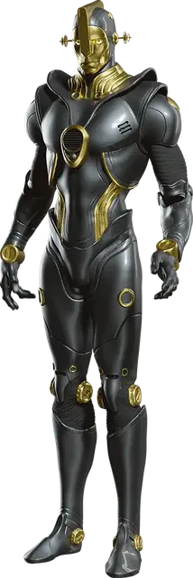

Андроид
Android
Средний Конструкт, законно-нейтральный

Класс Доспеха 15 (природный доспех)
Хиты 91 (14к8 + 28)
Скорость 30 футов, плавая 30 футов (только водолаз), летая 30 футов (парит; только летун)
| мод | спас | ||
|---|---|---|---|
| СИЛ | 18 | +4 | +4 |
| ЛОВ | 18 | +4 | +4 |
| ТЕЛ | 15 | +2 | +5 |
| мод | спас | ||
|---|---|---|---|
| ИНТ | 12 | +1 | +1 |
| МДР | 13 | +1 | +4 |
| ХАР | 10 | +0 | +0 |
Навыки Восприятие +7, История +4
Сопротивление урону кислота, огонь
Иммунитет к урону холод, яд
Иммунитет к состояниям истощение, отравление
Чувства слепое зрение 60 футов (только страж), тёмное зрение 60 футов, пассивное Восприятие 17
Языки Общий плюс языки на которых говорит его создатель
Опасность 5 (1800 опыта)
Бонус мастерства +3
Особенности
Специализация. При создании андроид получает одну из из шести возможных специализаций, предназначенных для его роли (совершите бросок к6 или выберите). От его специализации зависят некоторые особенности этого блока статистики.
| к6 | Форма |
| 1 | Летун |
| 2 | Дипломат |
| 3 | Водолаз |
| 4 | Дуэлянт |
| 5 | Врач |
| 6 | Страж |
Перегрузка электричеством. Когда андроид получает урон электричеством, он должен преуспеть в спасброске Телосложения Сл 10, иначе становясь ошеломленным до начала своего следующего хода.
Действия
Мультиатака. Андроид совершает два Удара силовым полем.
Удар силовым полем. Рукопашная или дальнобойная атака оружием: +7 к попаданию, досягаемость 5 футов или дистанция 40/120 фт., одна цель. Попадание: 15 (2к10 + 4 ) урона силовым полем. Если цель является существом Среднего или меньшего размера, она должна преуспеть в спасброске Силы Сл 15, иначе сбивается с ног.
Использование заклинаний (только Дипломат и Врач). Андроид накладывает одно из следующих заклинаний, без использования материальных компонентов используя Интеллект в качестве базовой характеристики:
• 2/день каждое: лечение ран [cure wounds] (как заклинание 3-го уровня, только Врач), опознание [identify], языки [tongues] (только Дипломат)
Реакции
Парирование (только Дуэлянт). Андроид добавляет 3 к КД против одной рукопашной атаки, которая должна попасть по нему. Для этого андроид должен видеть атакующего.
Описание
Андроиды — это искусственные Гуманоиды, чьи создатели изобрели их для помощи в узкоспециализированных задачах. Они спроектированы быть послушными и, как правило, обладают дружелюбным нравом.
У каждого андроида есть одна или несколько модернизаций, помогающих ему выполнять свою изначальную роль. Также все они способны защищаться с помощью концентрированных снарядов силового поля вблизи или на расстоянии.
Несмотря на сложное устройство андроидов, электрические разряды могут временно прервать работу слаженных деталей. Аналогично, нанесение вреда его главным рабочим компонентам или длительное пребывание в изоляции может подвергнуть износу важнейшие особенности андроида, что приведет к его нестабильному поведению.